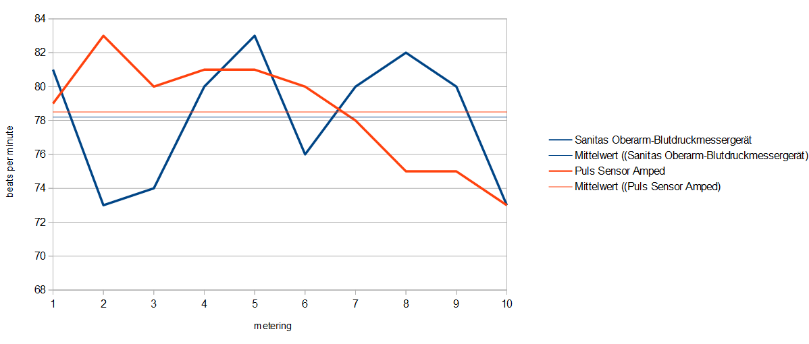
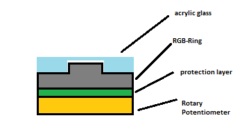
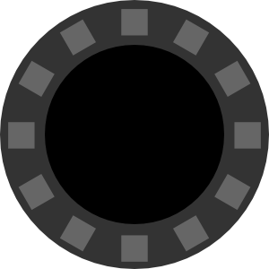
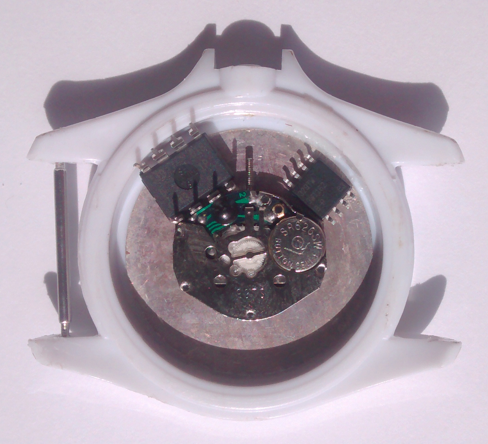
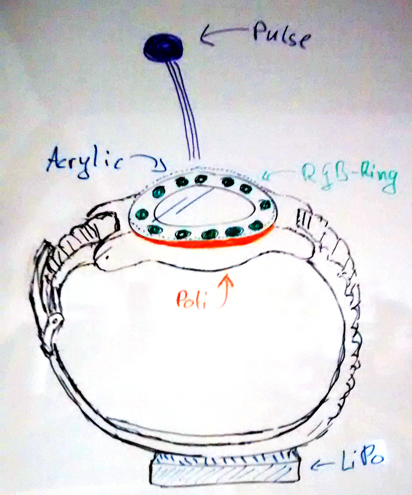

<!doctype html>
<html lang="en">

	<head>
		<meta charset="utf-8">

		<title>reveal.js - The HTML Presentation Framework</title>

		<meta name="description" content="LightWatch - Week 2">
		<meta name="author" content="Bengt Lüers, Marius Wybrands">

		<meta name="apple-mobile-web-app-capable" content="yes" />
		<meta name="apple-mobile-web-app-status-bar-style" content="black-translucent" />

		<meta name="viewport" content="width=device-width, initial-scale=1.0, maximum-scale=1.0, user-scalable=no">

		<link rel="stylesheet" href="reveal.js/css/reveal.min.css">
		<link rel="stylesheet" href="reveal.js/css/theme/simple.css" id="theme">

		<!-- For syntax highlighting -->
		<link rel="stylesheet" href="reveal.js/lib/css/zenburn.css">

		<!-- If the query includes 'print-pdf', include the PDF print sheet -->
		<script>
			if( window.location.search.match( /print-pdf/gi ) ) {
				var link = document.createElement( 'link' );
				link.rel = 'stylesheet';
				link.type = 'text/css';
				link.href = 'reveal.js/css/print/pdf.css';
				document.getElementsByTagName( 'head' )[0].appendChild( link );
			}
		</script>

		<!--[if lt IE 9]>
		<script src="reveal.js/lib/js/html5shiv.js"></script>
		<![endif]-->
	</head>

	<body>

		<div class="reveal">

			<!-- Any section element inside of this container is displayed as a slide -->
			<div class="slides">


<section data-markdown>
    <script type="text/template">
404 &mdash; Bengt Lüers, Marius Wybrands

# LightWatch


A wearable light display for body stress.

    </script>
</section>


<!--
copy this to create a new slide:

<section data-markdown>
    <script type="text/template">


    </script>
</section>

-->

<section data-markdown>
    <script type="text/template">

## Task

&nbsp;

-   extend a watch to an interactive light display
- 	derive stress level from sensor data
-   correct stress level via user input
-   visualize stress level using RGB LED ring

    </script>
</section>


<section data-markdown>
    <script type="text/template">

## Progress

&nbsp;

-   done: explore feasibility
-   done: evaluate user input modalities
- 	**now: explore sensor input modalities**
-	 next: build actual prototype

&nbsp;

    </script>
</section>


<section data-markdown>
    <script type="text/template">

## Evaluation: Pulssensor (1/2)

&nbsp;

-	 Method: Compare to blood pressure monitor.
-	 Result: Very similar average.
-   Verdict: Seems usable.

&nbsp;



   </script>
</section>


<section data-markdown>
    <script type="text/template">

## Evaluation: Pulssensor (2/2)

&nbsp;

-	 Method: Experiment with different positions on arm &amp; hand.
-	 Result: Flaky results on arm, reliable readings on fingers.
-	 Verdict: Pulssensor needs to be mounted on the finger.

&nbsp;

<iframe
	width="800"
	height="520"
	frameborder="0"
	src="https://www.youtube.com/embed/k0xbbJxTibM?rel=0&autoplay=1&controls=0&modestbranding=1&fs=0&vq=hd1080"
	allowfullscreen>
</iframe>

</script>
</section>

<section data-markdown>
		<script type="text/template">

## Evaluation: Potentiometer

&nbsp;

-   method: internet research
-   feasibility: unknown, needs to be tested with actual hardware
-   verdict: worth trying, waiting for order to arrive

		</script>
</section>

<section data-markdown>
		<script type="text/template">

## Potentiometer: Layering

&nbsp;

-   potentiometer beneath the rgb ring
-   flexible layer enables applying pressure

&nbsp;



</script>
</section>

<section data-markdown>
<script type="text/template">

## RGB-Ring

&nbsp;

-	incident: attempted to fit plexiglas into ring
-  effect: ring is broken
-  verdict: rings needs protection against force

&nbsp;


</script>
</section>

<section data-markdown>
<script type="text/template">

## Ring Protector

&nbsp;

-	purpose: distribute force across ring
-  method: fit acrylic glas using laser cutter

&nbsp;



</script>
</section>

<section data-markdown>
		<script type="text/template">

## Evaluation: Arduino Minimizing

&nbsp;

-   problem: the arduino needs to fit into the watchcase
-   method: internet research, breadboard prototype
-   idea: use a ATtiny as a small Arduino replacement
-   verdict: the circuitry will fit into the watch

&nbsp;



		</script>
</section>

<section data-markdown>
<script type="text/template">

## Hardware Concept

&nbsp;



-   1000 mA LiPo
-   ATtiny85
-   Pulse Sensor
-   Potentiometer
-   RGB-Ring

		</script>
</section>


<section data-markdown>
    <script type="text/template">

## Interaction Concept

&nbsp;

-   output: system measures pulse, displays guessed stress
-   interaction: user corrects to felt stress using potentiometer

&nbsp;

    </script>
</section>


<section data-markdown>
    <script type="text/template">
## Outlook

&nbsp;

-   combine component prototypes into initial system prototype
-   comprehensive software prototpe

&nbsp;

    </script>
</section>


<section data-markdown>
    <script type="text/template">

# The End

    </script>
</section>

			</div>

		</div>

		<script src="reveal.js/lib/js/head.min.js"></script>
		<script src="reveal.js/js/reveal.min.js"></script>

		<script>

			// Full list of configuration options available here:
			// https://github.com/hakimel/reveal.js#configuration
			Reveal.initialize({
				controls: true,
				progress: true,
				history: true,
				center: true,

				theme: Reveal.getQueryHash().theme, // available themes are in /css/theme
				transition: Reveal.getQueryHash().transition || 'none', // default/cube/page/concave/zoom/linear/fade/none

				// Parallax scrolling
				// parallaxBackgroundImage: 'https://s3.amazonaws.com/hakim-static/reveal-js/reveal-parallax-1.jpg',
				// parallaxBackgroundSize: '2100px 900px',

				// Optional libraries used to extend on reveal.js
				dependencies: [
					{ src: 'reveal.js/lib/js/classList.js', condition: function() { return !document.body.classList; } },
					{ src: 'reveal.js/plugin/markdown/marked.js', condition: function() { return !!document.querySelector( '[data-markdown]' ); } },
					{ src: 'reveal.js/plugin/markdown/markdown.js', condition: function() { return !!document.querySelector( '[data-markdown]' ); } },
					{ src: 'reveal.js/plugin/highlight/highlight.js', async: true, callback: function() { hljs.initHighlightingOnLoad(); } },
					{ src: 'reveal.js/plugin/zoom-js/zoom.js', async: true, condition: function() { return !!document.body.classList; } },
					{ src: 'reveal.js/plugin/notes/notes.js', async: true, condition: function() { return !!document.body.classList; } }
				]
			});

		</script>

	</body>
</html>
